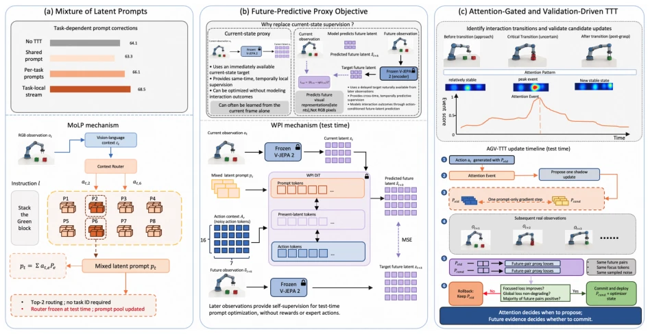
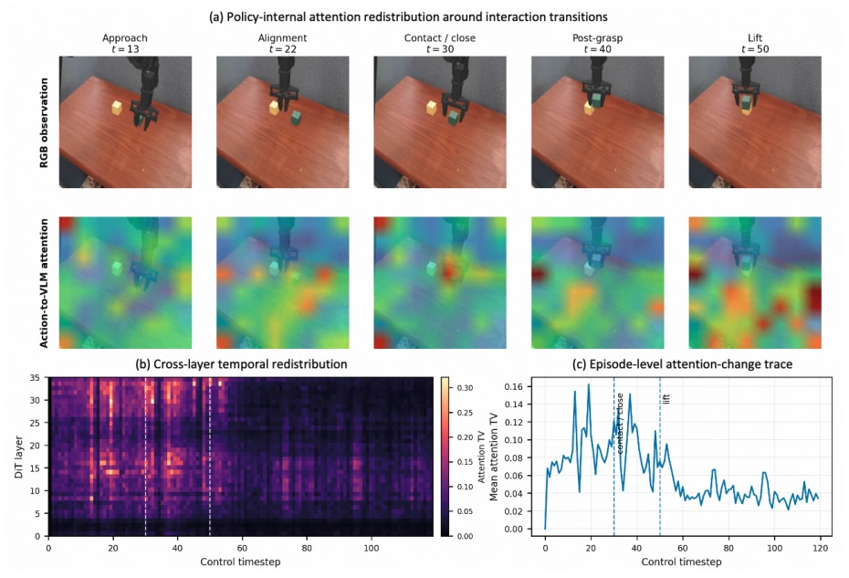

VANE: Reliable Test-Time Training for Vision-Language-Action Models via Future Visual Representation Prediction
Hongjin Ji, Guoyang Xia, Luoyang Sun, Fangxiang Feng, Lei Ren abspdf
论文点评Review
VANE 给 VLA 的 Test-Time Training 搞了个“安全阀”，试图解决闭环更新中“改动作影响未来数据”的死循环。它用未来视觉预测代替状态接地，还加了注意力门控来过滤无效更新。虽然 WidowX 上提升了 3.2pp，但 Google Robot 上效果波动，说明“可靠”是有条件的。这方案计算开销不小，但比盲目在线微调靠谱，适合对稳定性要求高的场景。它本质上是在“适应”和“稳定”之间找平衡，用验证换可靠，代价是延迟和计算。不过，它证明了在 VLA 上做 TTT 并非不可行，只是需要更复杂的工程控制。
VANE introduces a "safety valve" for Test-Time Training of VLA, attempting to resolve the deadlock of "actions affecting future data" within closed-loop updates. It employs future visual prediction to replace state grounding and incorporates attention gating to filter invalid updates. Although it achieved a 3.2pp improvement on WidowX, the performance fluctuated on Google Robot, indicating that "reliability" is conditional. This approach incurs significant computational overhead, yet is more reliable than blind online fine-tuning, making it suitable for scenarios demanding high stability. Essentially, it seeks a balance between "adaptation" and "stability", trading verification for reliability at the cost of latency and computation. However, it demonstrates that performing TTT on VLA is not infeasible, merely requiring more complex engineering control.
Existing VLA models face difficulties in adapting to new environments during deployment, and traditional fine-tuning incurs high costs [1]. Although TTT is lightweight, updates within a closed-loop alter subsequent observations, causing supervision signals to become invalid [6]. Single Prompts mix conflicting task corrections, whereas independent Prompts waste shared structures. A mechanism capable of perceiving context and verifying update consequences is required to prevent harmful updates from entering the controller. Particularly, predictive TTT faces challenges of target latency and closed-loop coupling, which existing methods have not sufficiently addressed, resulting in unreliable updates. For instance, TTT-VLA [6] exhibits inconsistent performance on QwenPi, necessitating a more reliable framework.
VANE consists of three steps: 1. MoLP constructs a shared Prompt library, performing sparse routing based on visual-language context to avoid task interference. 2. WPI utilizes future visual representation prediction as a proxy target, replacing state grounding to provide cross-temporal supervision. 3. AGV-TTT monitors attention changes to trigger shadow updates, committing atomically only after subsequent observations verify success, otherwise rolling back. Specifically, MoLP combines Prompts via Top-K routing, WPI freezes the encoder to predict future latents, and AGV utilizes attention redistribution to detect interaction events, verifying loss improvement on the shadow copy, requiring the focused loss to increase while the global loss does not decrease.

Figure 1: Overview of VANE. (a) MoLP composes a context-dependent latent prompt from a shared prompt bank without requiring a task identifier. (b) The upper comparison contrasts two deployment-observable proxies: state grounding supplies an immediately available but same-time target, whereas WPI uses delayed observations to provide cross-time, action-conditioned supervision of interaction outcomes. The lower diagram instantiates WPI as future visual representation prediction for prompt-only TTT. (c) AGV-TTT uses cross-layer attention redistribution to propose a shadow update and commits it only after paired future validation.

Figure 2: Policy-internal cross-layer attention changes around interaction transitions. (a) RGB observations (upper row) and representative action-query-to-VLM image-patch attention maps (lower row) from a Stack Blocks rollout at a fixed checkpoint; all attention maps share one episode-level scale. (b) Temporal redistribution of the action-to-VLM attention distribution across all 36 DiT layers. (c) The corresponding layer-averaged attention-change trace. Pronounced redistribution occurs around contact/closure and the subsequent post-grasp transition.
Evaluated on SimplerEnv WidowX and Google Robot. VANE increased the success rate on WidowX from 63.9% to 71.2%, outperforming TTT-VLA [6]. AGV-TTT reduced backpropagation by 98.7%. Ablation studies indicate the necessity of future verification. The improvement on Google Robot was smaller, indicating that performance depends on task distribution. Specific tasks include Stack, Carrot, etc., with WidowX showing superior performance. On WidowX, WPI outperforms State Grounding, whereas on Google Robot the opposite holds, demonstrating task dependency.